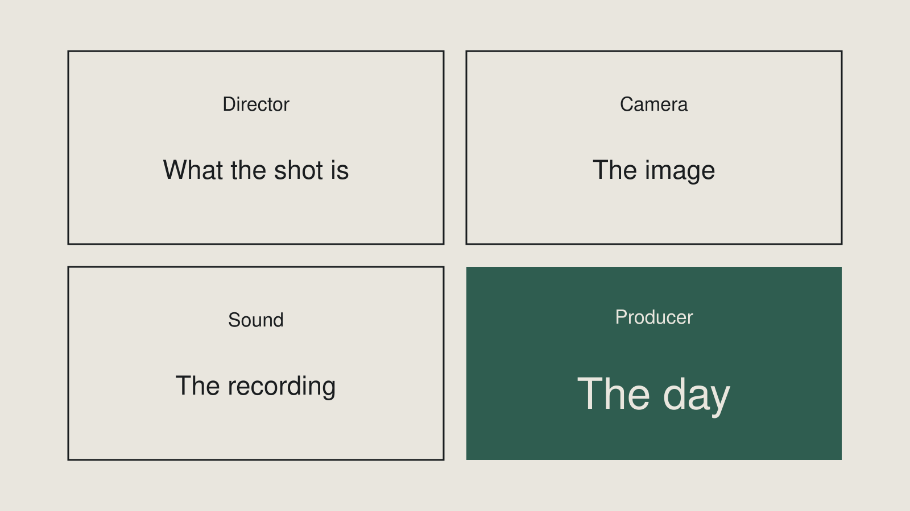

Week 8 slidesProduction planning and team production
What was on screen in class. Arrow keys or click to move.
1 / 17
Title
Week 8 — Production planning and team production
Module summative · 15% of your course grade · midterm checkpoint
2 / 17
A plan, and what came of it
Shown in class.
3 / 17
A plan nobody opened
Shown in class.
4 / 17
One of these was used.
How can you tell?
5 / 17
Planning as thinking.
Not paperwork.
6 / 17
Outcomes
By the end of this week you can
- Write a treatment and build a shot list from it
- Storyboard a sequence
- Schedule a shoot and run it — book the equipment, sequence the day, keep it on track
- Hold a defined role on a production someone else is directing
- Coordinate with your team and record what you were responsible for
7 / 17
The derivation
"Write a treatment and build a shot list from it."
The derivation is the skill.
8 / 17
Storyboard a *sequence*
Outcome 8.2 says a sequence.
Not the production.
Draw the one where the shots are hard to hold in your head.
9 / 17
Four roles. Four accountabilities.

10 / 17
Producing is deciding what happens next.
You are the person the others are waiting on.
11 / 17
Everyone produces once.
Write down who produces when. Before you start.
12 / 17
Project management is being assessed.
Not the shoot was stressful.
The managing of it.
13 / 17
8.3 is the only place
8.3 is the only place in this course
you are accountable for other people's time.
There is no second chance at it later in the term.
14 / 17
Record audio separately.
Not into the camera.
Next week you sync it.
15 / 17
Fall Break
Fall Break costs this week one session.
Plan around it. Not through it.
A shoot day with a four-day gap in the middle is not a shoot day.
16 / 17
Back up before you leave.
There is no reshoot.
17 / 17
What you hand in
Three things.
Planning documents — team
Footage and separate audio — team
Role reflection — yours alone